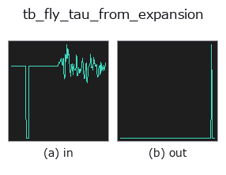

typed op• Datenarten: signal → signal
• Aufruf: fullseye.apply(img, "tb_fly_tau_from_expansion", a=0.5, b=0.5) (das 2-D-Modell ist ein Bild plus zwei skalare Regler a,b∈[0,1])

*Die Abbildung ist die tatsächliche Ausgabe auf einer synthetischen 128×128-Eingabe. Links Eingabe, rechts Ausgabe. Punktwolken als Draufsicht-Streudiagramm (Helligkeit = z), 1-D-Reihen als Linie, Volumen als Maximum-Projektion entlang z, Videos als mittleres Bild, komplexe Bilder als Betrag; Rückgabewerte, die kein Bild ergeben, werden als Werte gezeigt.*
*Regler a ändert die Ausgabe nicht (gemessen: identisch bei 0,1 / 0,5 / 0,9).*
*Regler b ändert die Ausgabe nicht (gemessen: identisch bei 0,1 / 0,5 / 0,9).*
Stufen (die vorangehenden Ops → dieser Op, von links nach rechts):
▸ tb_fly_tau_from_expansion: stages (docs site)
Auf anderen Bildern (synthetische Szene / Foto / Münzen. Obere Reihe: Eingaben, untere Reihe: deren Ausgaben. Regler auf Standard):
▸ tb_fly_tau_from_expansion: other inputs (docs site)
> Für diesen Operator gibt es noch keine Übersetzung. Es folgt der Originaltext unverändert.
Time-to-contact from optical expansion — the tau margin.
From the subtended angle and its rate::
shape="disk": tau = sin(theta) / theta'
shape="sphere": tau = 2*tan(theta/2) / theta'
`theta_signal` is the full subtended angle over time, radians.
★ The two object models differ by 33% at a 60-degree subtense (`sin 60 = 0.866`
vs `2 tan 30 = 1.155`); using the wrong one silently mis-times a landing, so
the model is a required, named choice rather than a default guess.
theta_signal: the full subtended angle per sample, radians.
dt_s: the sample interval, seconds.
shape: `"disk" (a frontal circular disk) or "sphere"`.
Returns a 1-D float64 array of the time-to-contact per sample, seconds.
Non-expanding samples (`theta' <= 0) return NaN` — a documented
non-finite, because a contracting or static angle has no time-to-contact and
inventing one would be a plausible-wrong number.
Ground truth: for the model's own object geometry (`theta = 2 asin(l/d)` for a
sphere, `theta = 2 atan(l/d) for a disk) approaching at speed |v|`, the
returned tau equals the true distance-over-speed `d/|v|` (pinned in the
tests).
Raises `ValueError`: a non-1-D / empty / too-short (< 3) / non-finite
*theta_signal*, a signal over :data:MAX_SIGNAL_POINTS, a non-positive *dt_s*,
and an unknown *shape*. A non-expanding angle is not an error — it is the
documented `NaN` return above.
Typed bridge of the flyvision op `fly_tau_from_expansion into the 2-D evolution registry: the same implementation, called under the op(v, a, b) convention. This op has no tunable parameter; a and b` are unused.
• Katalog der Beispieldaten (Download-URLs / Lizenzen) — 2-D nutzt skimage.data (BSD/Public Domain) plus synthetische Bilder, 3-D nennt Download-URLs echter Datenquellen (Stanford, PDS, …).
• Herkunft und Literatur der Operatoren — die Quellen der Forschung/Verfahren, auf denen diese Operatorfamilie beruht.
Das Programm unten ist nachweislich lauffähig (gleiche Eingabe wie die Abbildung). In der Studio-Hilfe wird dieser Block zu Schaltflächen, die es sofort laden und ausführen.
img_to_signal 0.50 0.50 tb_fly_tau_from_expansion 0.50 0.50
▸ Load this pipeline · Load & run
Die folgenden Beispiele rufen den zugrunde liegenden Ledger-Op fly_tau_from_expansion auf. Dieser Brücken-Op ist dieselbe Implementierung, angepasst an die Konvention fn(v, a, b); das Verhalten gilt unverändert (nur die Aufrufform unterscheidet sich).
• poc_fly_vision — py -3.11 examples/poc_fly_vision.py
signal als Eingabe)identity · tb_create_funct_1d_array · tb_smooth_funct_1d_gauss · tb_smooth_funct_1d_mean · tb_derivate_funct_1d · tb_integrate_funct_1d · tb_zero_crossings_funct_1d · tb_abs_funct_1d
typed)tb_points_to_voxel · tb_estimate_point_normals · tb_iss_keypoints · tb_project_points · tb_render_point_depth · tb_statistical_outlier_removal · tb_radius_outlier_removal · tb_voxel_grid_downsample
*Provenance: ops.py — 2D Operator-Registry. Diese Notiz wird von tools/opdocs.py md erzeugt (nicht von Hand bearbeiten).*
© 2026 Kazufumi Furuse — Fullseye operator documentation. Licensed under Apache-2.0.
{kind=link}
{kind=link}